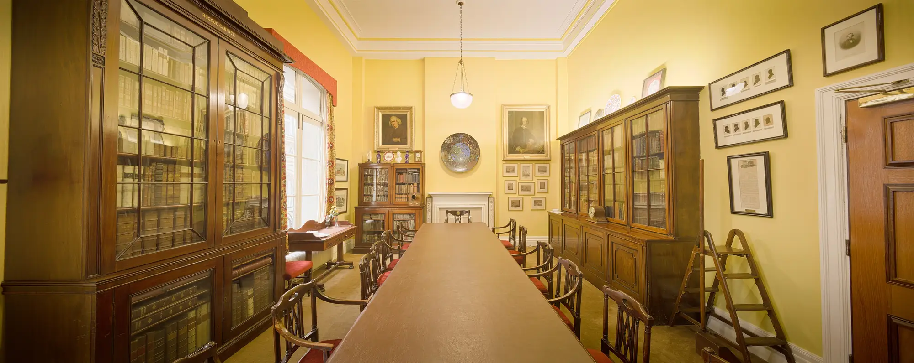
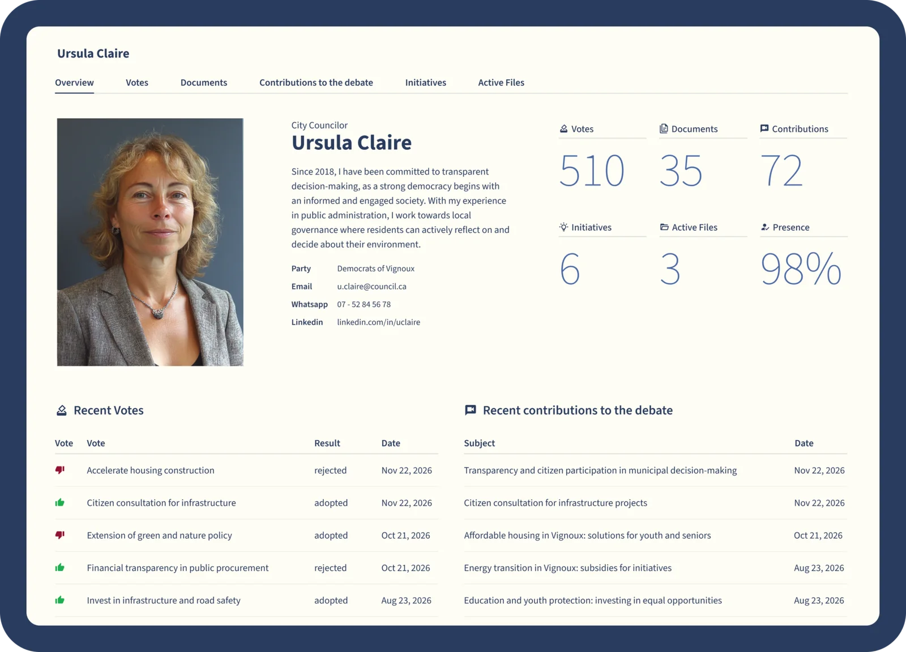

Built for the people who make decisions happen.
A committee system is chosen by Democratic Services, signed off by IT and used every week by Members. Here's what each of them gets.
At a glance
| You're | You need | Where it lives in Qualigraf |
|---|---|---|
| In Democratic Services | Reports in on time, packs out on time, minutes done | Workflow, Long-term planner, agenda compilation, AI Minutes |
| A Member | The papers, your notes and the vote, wherever you are | The paperless meeting app for iOS, Windows and Android |
| In IT or information governance | Fewer systems, proven security, records kept properly | One web based platform, ISO 27001, Cyber Essentials, ISO 16175 records |
| A resident or journalist | What was decided, by whom, and why | Published agendas, decisions, Member profiles and webcasts |
More time for procedure, less time chasing paper.
Meeting management, workflow, streaming and the archive in one platform, so the team can spend its time advising the chair and Members.
Reports that arrive
Every report has an approval route and a deadline, and everyone can see where it's got to.
Packs that build themselves
Front sheets, reports and appendices compiled from the files already in the system.
Minutes without the late night
Decisions recorded as you go, with AI Minutes for the transcript if you want it.
Deadlines in plain sight
The Long-term planner holds every meeting, milestone and publication date.


Every committee has its own rhythm. The system should follow it.
Approval routes, meeting types and publication rules are set to your constitution, so a licensing sub committee and full council each run the way they should.
Everything for the meeting, on the device you already carry.
Meeting calendar, agendas, papers, notes and votes, before, during and after the meeting. Simple for every level of technical ability.
iOS, Windows and Android
Log in and join from the office, from home or on the way in.
Notes your way
Typed notes, quick scribbles, highlights and bookmarks on any page.
Share with your group
Notes stay private unless you share them with chosen colleagues or groups.
Vote and speak
Digital voting and speaker queues, in the chamber or joining remotely.

One platform in place of a patchwork.
No more separate systems for meetings, streaming, records and case tracking, and no more integrations holding them together.
Fewer licences to manage
Meetings, workflow, streaming and archiving in one platform.
Independently certified
ISO 27001 and ISO 9001 certified, Cyber Essentials, and ISAE 3000 Type 2 attested.
Records kept properly
ISO 16175 records management and a built in audit trail.
Little call on your team
Fully web based, and it connects with your AV systems, streaming service and website.


The full story behind every decision, for anyone who asks.
Webcasts linked to agenda items, speaker names and votes. Member profiles with voting records and the issues they've spoken on. Alerts and newsletters for people who want to follow a topic.

Bring your hardest meeting. We'll run it on Qualigraf.
A walkthrough built around your own committee cycle, your deadlines, your approval routes and your Members.